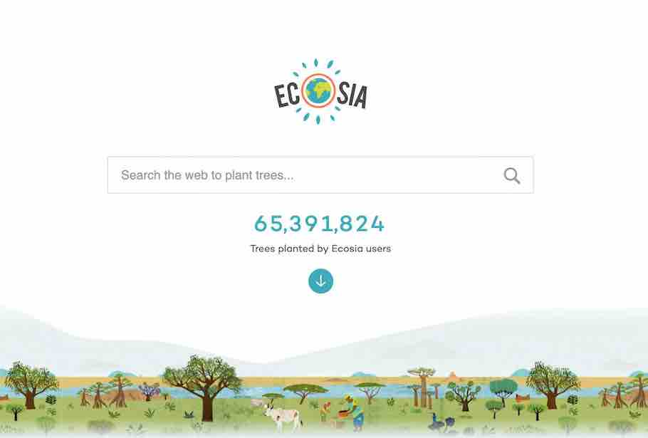
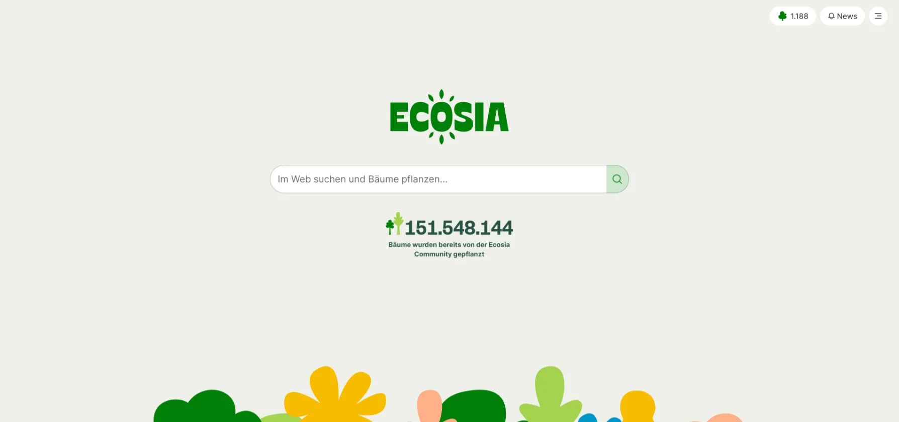
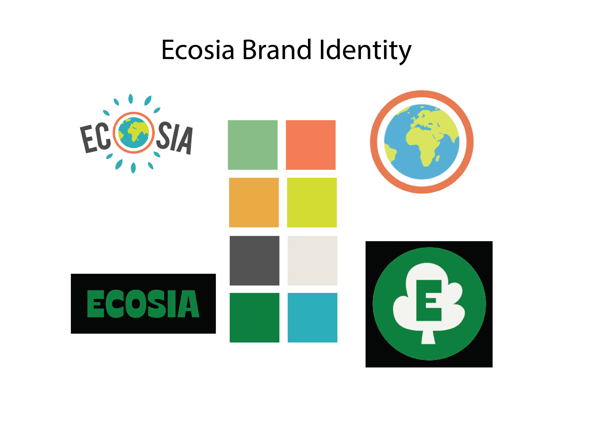
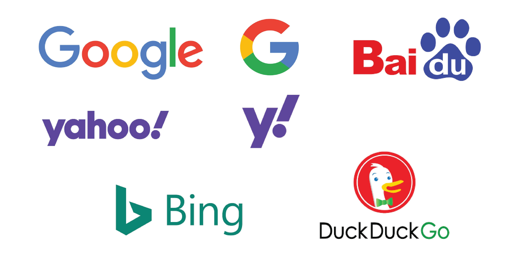
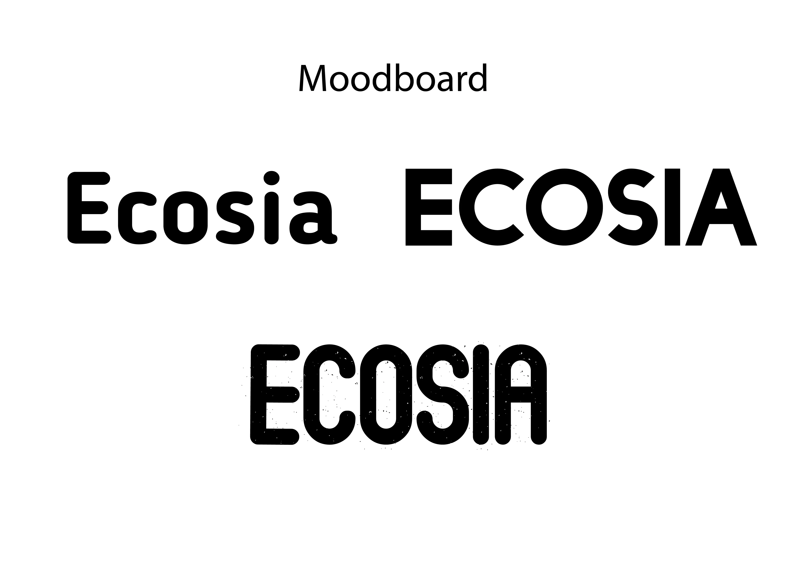

During my first few months experimenting with digital design, I got interested in the Ecosia search engine as it is less popular than other search engines such as Google and Yahoo!, and its purpose was not only to serve as a search engine but to also help the environment.
This search engine essentially helps the environment by planting trees according to the searches that its users make.
This is how the Ecosia search engine looked before the rebrand:
Ecosia then released a rebrand of their search engine to look like this:
Nothing extremely bothered me with this rebrand. I think that it was needed and more modern than the original design. However, I think that their logo could be better and more representative of their objective as a search engine.
During this time, I was watching a lot of graphic design videos on YouTube for my assignments and noticed a pattern. When redesigning, most would create a moodboard of the exising design. Then, they search for similar products and analyse what design techniques and effects are commonly used to create their logo. Therefore, I did the same thing for my first redesign attempt.
 Regarding the most popular search engines, I noticed that there is a common use of bold sans-serif fonts and flat designs. Keeping that in mind, I experimented with some typefaces and kept the ones I liked most.
Out of the three typefaces above, I liked the top-right one the most. However, I thought that it was lacking a bit to be used as a logo. Therefore, I rounded the edges using Adobe Illustrator and that made it much better. I eventually came up with the logo below, which incorporates both my new typeface and their new logo. I then designed a quick mock-up, but quickly learned that it had some flaws.
I also experimented with the app logo.